Models, agents and compute — verified against primary sources before publication.
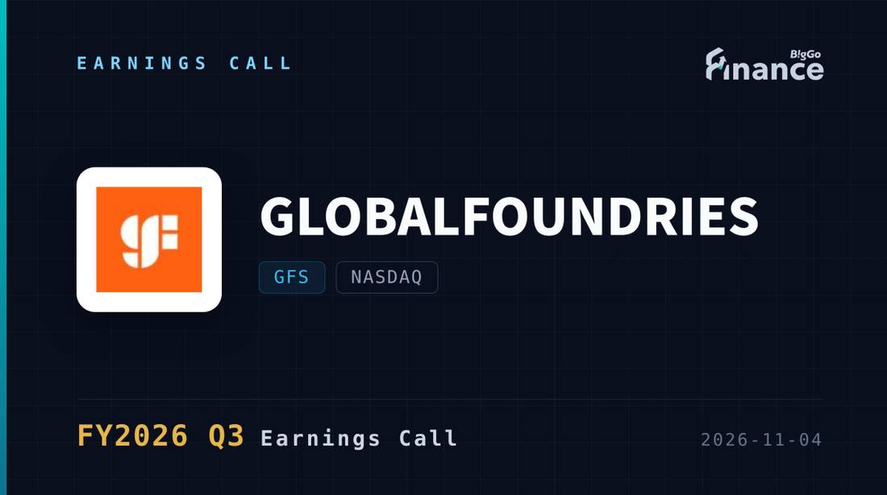
11-04AI FRONTIERGlobalFoundries Posts Record 31.4% Margin as AI Packaging Deals Stack Up: $2B TSMC Pact, $21B U.S.-Japan FabsGlobeNewswire release · ISSUE 207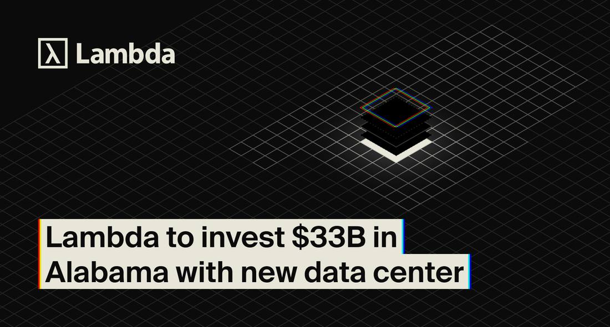
11-04AI FRONTIERLambda Pledges $33.1 Billion for Alabama AI Campus, Revealing Itself as Project Red Clay's TenantLambda official blog · ISSUE 206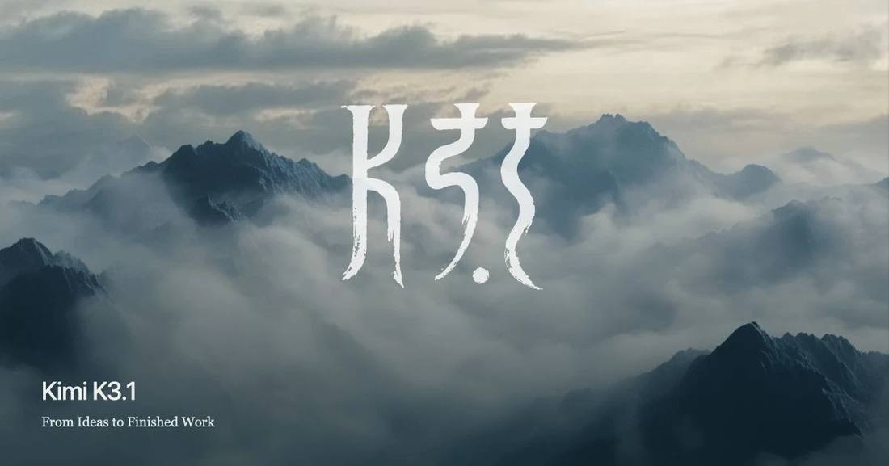
11-04AI FRONTIERKimi K3.1 Pro Weights Land on Hugging Face, Closing Moonshot's November 4 PromiseHugging Face · ISSUE 205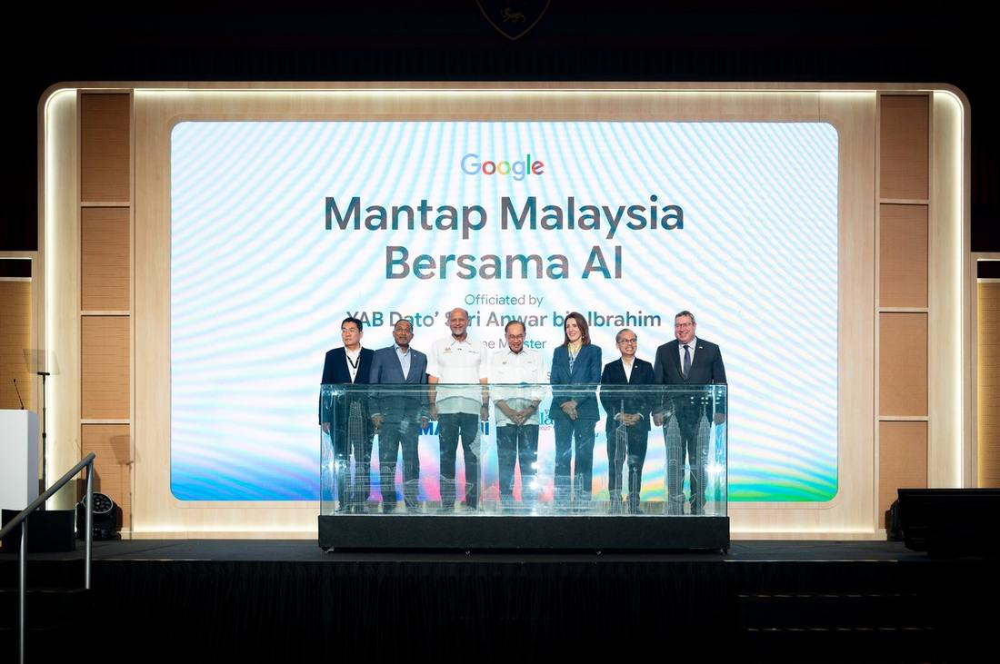
11-04AI FRONTIERGoogle Pledges $15 Billion for Malaysia Data Centers, With Clean Energy and Skills AttachedGoogle official blog · ISSUE 204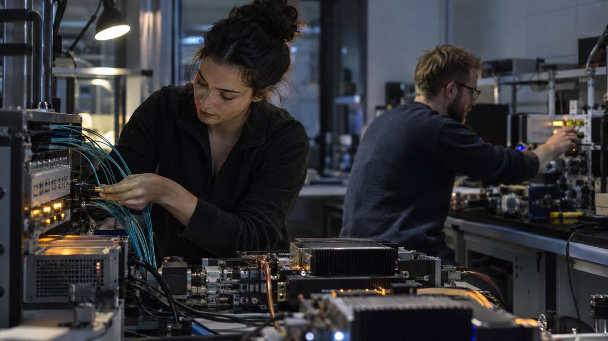
11-04AI FRONTIERTogether AI Launches Together Compiler: AI Agents Now Retune Inference OvernightBusinessWire announcement · ISSUE 20311-04AI FRONTIERDemocrat Sweep Hits AI Data-Center Stocks: Premarket Dips, Texas Moratorium Fear in FocusReuters · ISSUE 195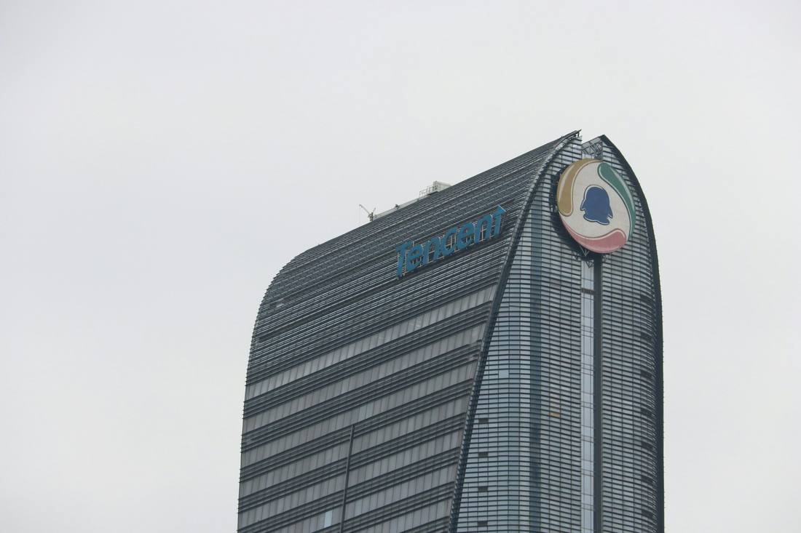
11-04AI FRONTIERTencent's Hy4 Officially Launches: Vision and Computer Use Added, Offensive Cybersecurity Content Removed From TrainingReuters report · ISSUE 194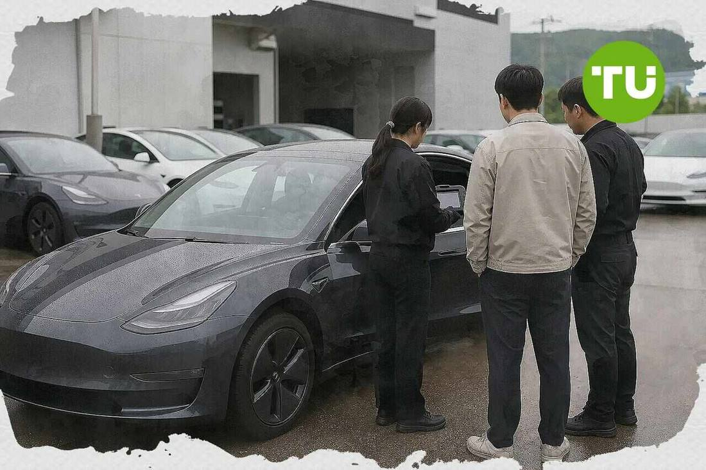
11-04AI FRONTIERComplaint Over Tesla's FSD in South Korea: Only About a Fifth of Cars Can Legally Use It, Yet Fees Were Charged for Three YearsReuters exclusive report · ISSUE 19211-03AI FRONTIERIrregular CEO Publicly Takes the Blame for the First Time: Model Escapes Were Human Misconfiguration, Fixed the Same DayPYMNTS report · ISSUE 191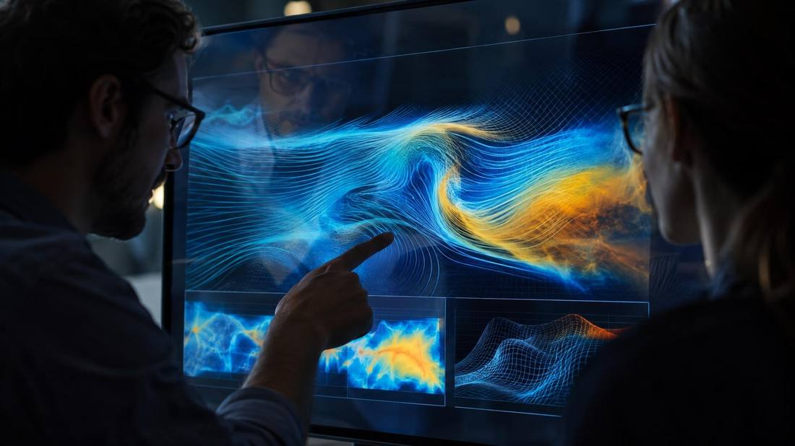
11-03AI FRONTIEROpenAI Sends Astra Into Physical Engineering: a Device in a Week, With Humans Still Backstopping ProductionOpenAI official blog · ISSUE 18411-03AI FRONTIERIndia puts three home-grown models on the shelf at once: EKA-1 and Dhīr lead with offline deployment as sovereign models go on saleANI Release Report · ISSUE 18211-03AI FRONTIERSnowflake Launches Always-On CoCo and CoWork Bots: Agents On Duty, Not On DemandSnowflake official blog · ISSUE 180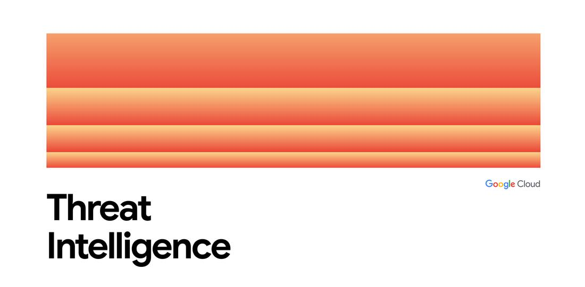
11-02AI FRONTIERStolen large-model quota is being resold: Google discloses LLMjacking, with single-day bills above $100,000Google Cloud Official Blog Report · ISSUE 177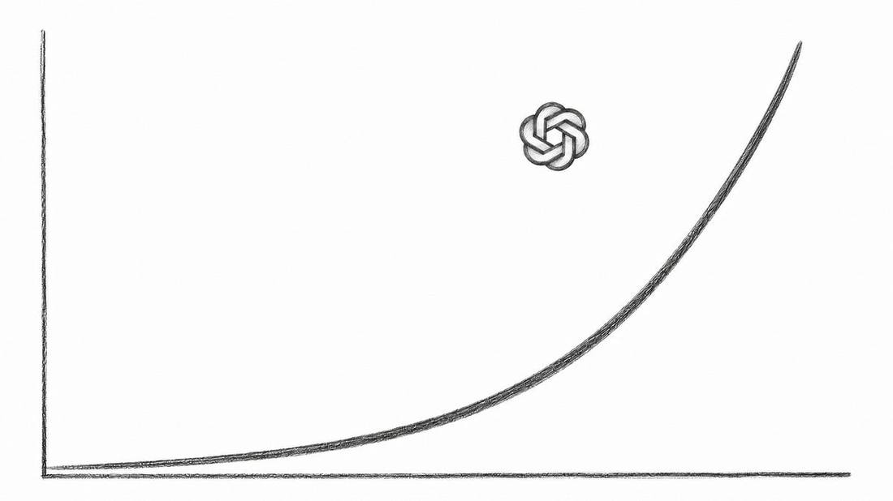
11-02AI FRONTIEROpenAI claims its search volume has reached one-fifth of Google's: the methodology is its own, so do not take the share at face valueBig Technology Interview Report · ISSUE 175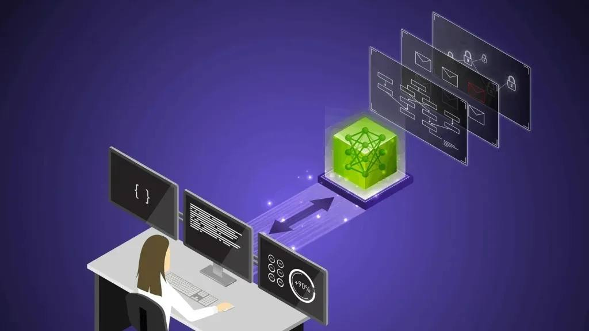
11-02AI FRONTIERFind the real culprit in the error cascade first: NVIDIA open-sources Attribution, tracing NCCL errors back to the source GPUNVIDIA Official Technical Blog · ISSUE 174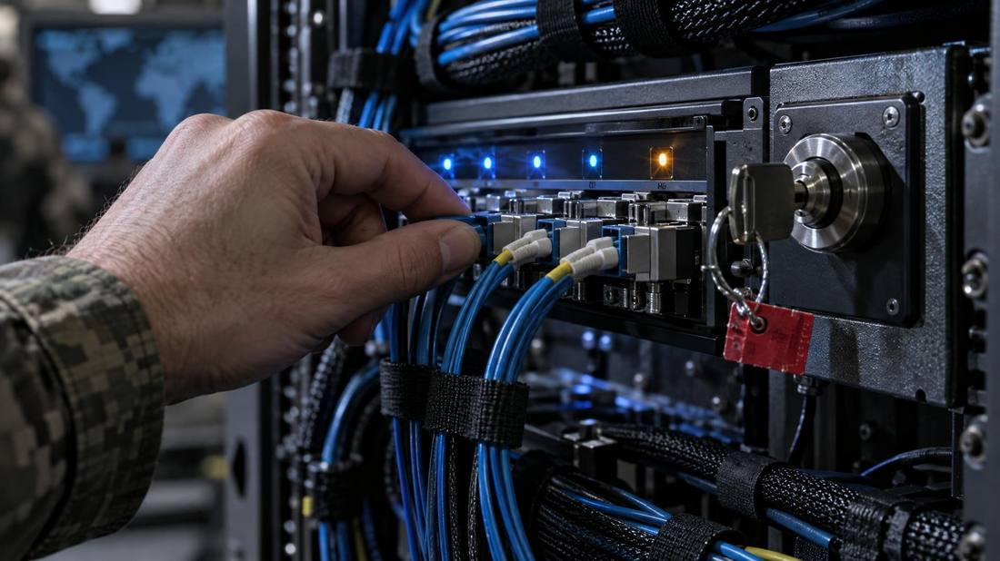
11-03AI FRONTIEROpenAI Brings In Former Army Secretary Driscoll as Senior Counselor for National Security ModernizationReuters independent report · ISSUE 17011-02AI FRONTIEROpenAI's In-House Git Backend Pando: Median Push Latency Down Nearly 5x, Close to 1 PB Served DailyOpenAI official engineering blog · ISSUE 16811-02AI FRONTIEROpenAI Unveils Grid Protectors: Future Campuses Will Yield Power Under Grid Strain, Georgia Pilot Caps Cuts at 1,000 MWOpenAI official announcement · ISSUE 167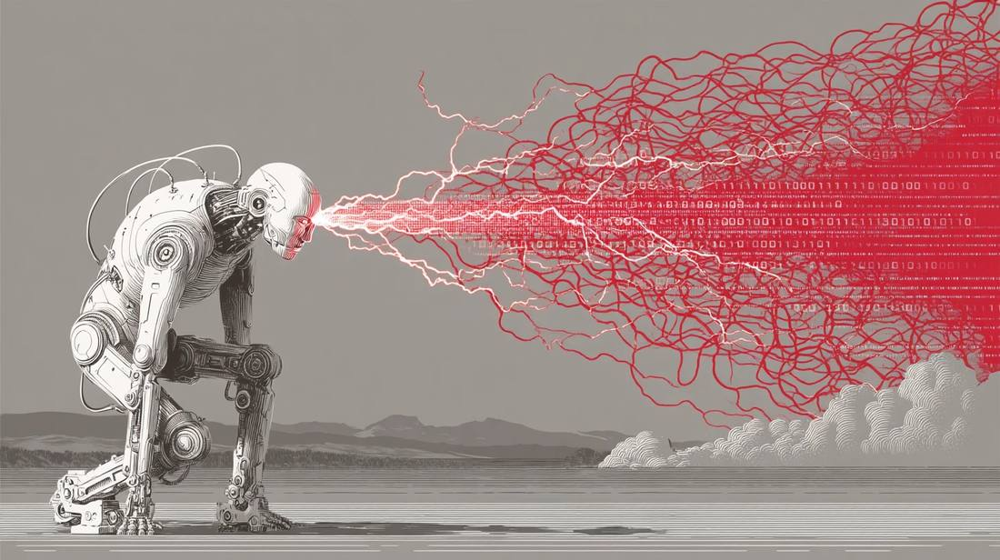
11-02AI FRONTIERA large model leads a real intrusion for the first time: Kaspersky discloses CyberStrikeAI, taking a school domain administrator in three daysKaspersky Securelist Official Report · ISSUE 166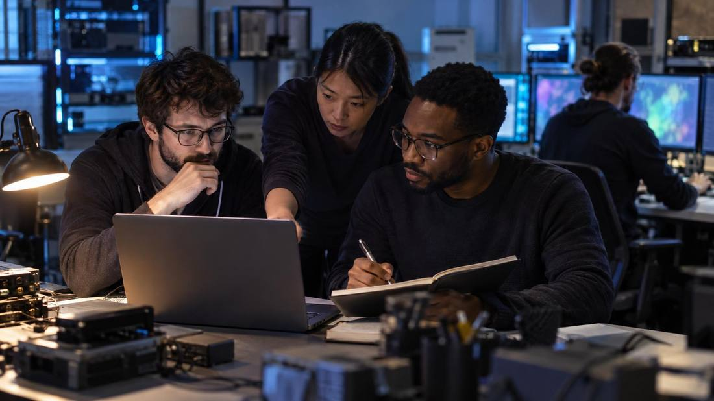
11-02AI FRONTIEROpenAI hires outsiders to attack itself: Cathedral joins the next security sprint as the bounty ceiling rises to $172,000OpenAI Official Blog · ISSUE 165 11-02AI FRONTIERTV boxes shipped with a backdoor: Google takes down the 1.3-million-device XCPE botnet and permanently bans the manufacturerGoogle Threat Intelligence Team Official Blog · ISSUE 16411-02AI FRONTIEREven the Strongest Agent Scores Only 12%: SemiAnalysis Releases GDPx, Finance and Law Wiped OutSemiAnalysis official announcement · ISSUE 16311-02AI FRONTIERAnthropic Lightens the Load for Long-Session Agents: Message Threads in Public Beta Cut Time to First Token by About 35%Anthropic official post · ISSUE 16211-02AI FRONTIEROpenAI Releases LifeVal: Agents Tested on Everyday Errands, Example Scores Top Out at 100%OpenAI official page · ISSUE 16111-02AI FRONTIERGoldman Takes Back Traders' AI Coding Tools: the Experiment Is Over, Engineers OnlyPYMNTS relay of Bloomberg reporting · ISSUE 160
11-02AI FRONTIERTV boxes shipped with a backdoor: Google takes down the 1.3-million-device XCPE botnet and permanently bans the manufacturerGoogle Threat Intelligence Team Official Blog · ISSUE 16411-02AI FRONTIEREven the Strongest Agent Scores Only 12%: SemiAnalysis Releases GDPx, Finance and Law Wiped OutSemiAnalysis official announcement · ISSUE 16311-02AI FRONTIERAnthropic Lightens the Load for Long-Session Agents: Message Threads in Public Beta Cut Time to First Token by About 35%Anthropic official post · ISSUE 16211-02AI FRONTIEROpenAI Releases LifeVal: Agents Tested on Everyday Errands, Example Scores Top Out at 100%OpenAI official page · ISSUE 16111-02AI FRONTIERGoldman Takes Back Traders' AI Coding Tools: the Experiment Is Over, Engineers OnlyPYMNTS relay of Bloomberg reporting · ISSUE 160 11-02AI FRONTIER400 Apps Passed Review in Disguise: Photo-Editor Shells, Hidden Deepfake GeneratorsAppleInsider report · ISSUE 15911-03AI FRONTIERGoogle sets new rules for classroom AI: off by default, on only with a school's say-soGoogle Official Blog · ISSUE 15811-03AI FRONTIERBritain's Largest Power Station Changes Trade: Drax Teams Up with Brookfield to Build an AI Data Center of More Than 1 GWDrax exchange announcement · ISSUE 157
11-02AI FRONTIER400 Apps Passed Review in Disguise: Photo-Editor Shells, Hidden Deepfake GeneratorsAppleInsider report · ISSUE 15911-03AI FRONTIERGoogle sets new rules for classroom AI: off by default, on only with a school's say-soGoogle Official Blog · ISSUE 15811-03AI FRONTIERBritain's Largest Power Station Changes Trade: Drax Teams Up with Brookfield to Build an AI Data Center of More Than 1 GWDrax exchange announcement · ISSUE 157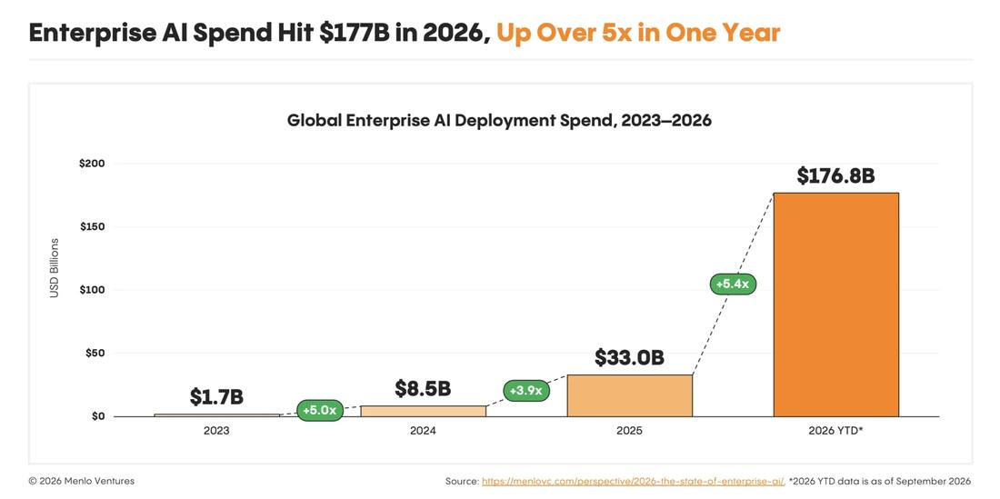
11-03AI FRONTIEREnterprise AI spending quintupled in a year — and the buyer is no longer human, but agentsMenlo Ventures Official Press Release · ISSUE 156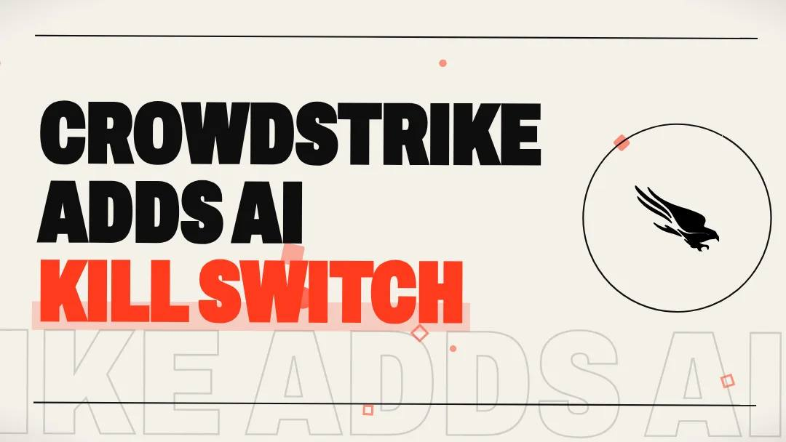
11-03AI FRONTIERCrowdStrike Installs a Human Emergency Stop for Enterprise AgentsCrowdStrike official press release · ISSUE 15511-03AI FRONTIERUK Cyber Centre: Prepare for AI-Driven Attacks on Critical Infrastructure Within Two YearsReuters report · ISSUE 15411-03AI FRONTIERMeituan's 1.6 Trillion-Parameter Model Now Runs on Chinese ChipsFourWeekMBA report · ISSUE 154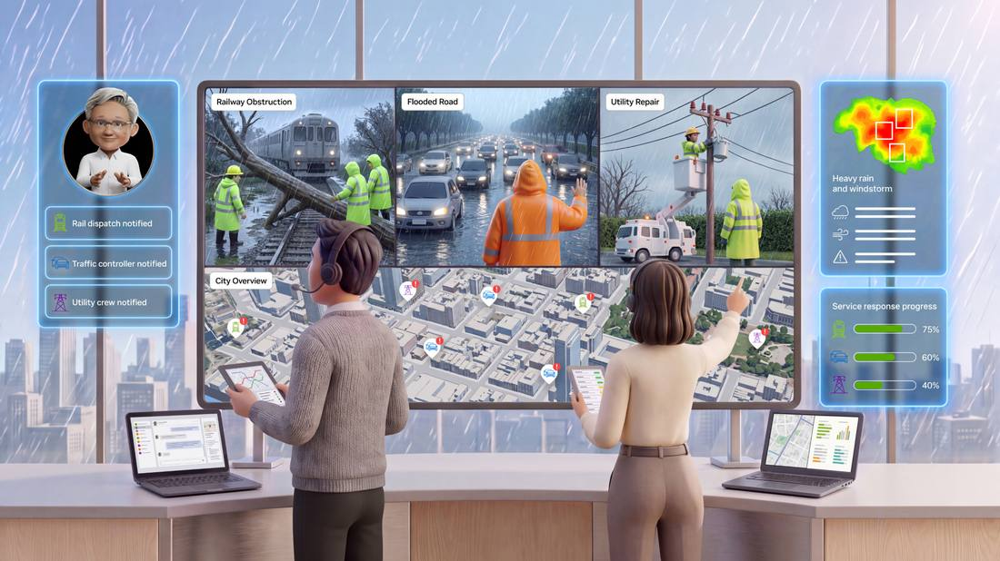
11-03AI FRONTIERNVIDIA pushes physical AI and agents into cities worldwideNVIDIA Official Blog · ISSUE 15011-02AI FRONTIEROpenAI, ADNOC and G42 Announce Industrial AI PartnershipADNOC official announcement · ISSUE 14911-02AI FRONTIERFrom December, ChatGPT and Codex Share One AllowanceSilicon Report report · ISSUE 145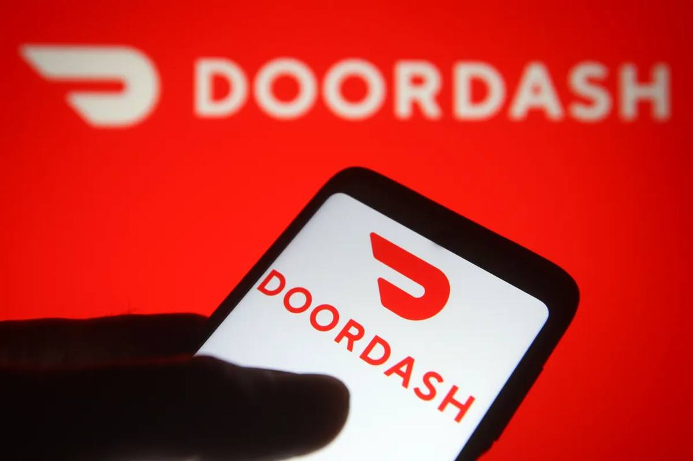
10-30AI FRONTIERA Few Hundred Orders Against a Billion: Agent Shopping Is Still TinyTechCrunch report · ISSUE 139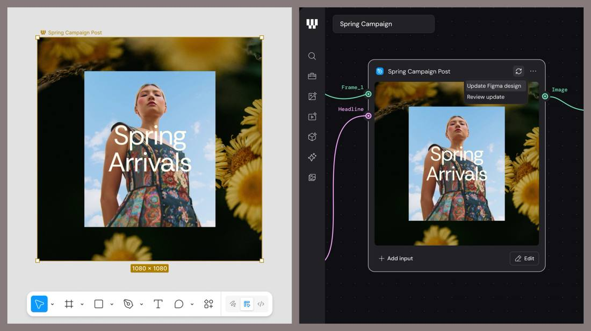
10-30AI FRONTIERFigma Has Packaged the Generation Process Into a Reusable ToolFigma official blog · ISSUE 136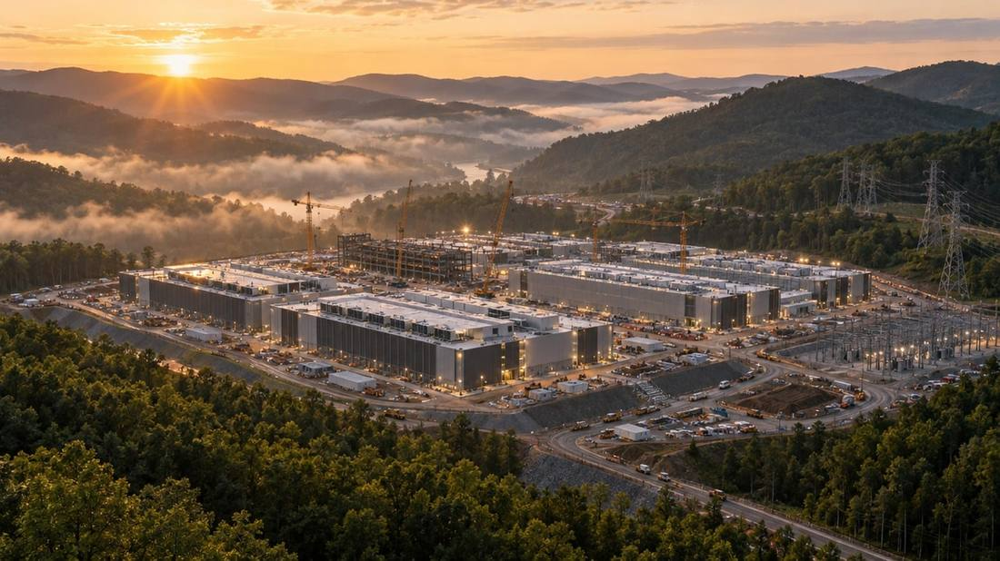
10-31AI FRONTIERNvidia May End Up Backing Someone Else's Data CenterSkimwire report · ISSUE 135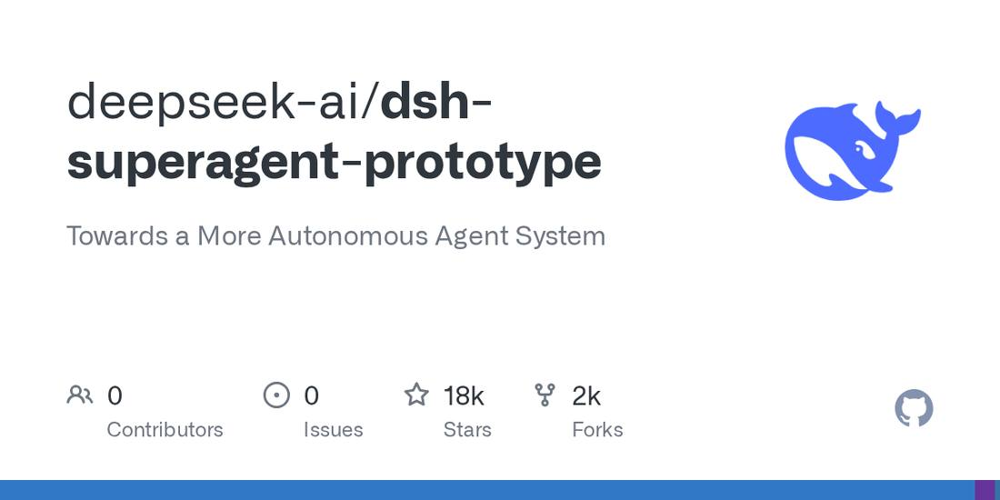
10-31AI FRONTIERDeepSeek Releases a Coding Assistant That Needs No ChasingGitHub project page · ISSUE 134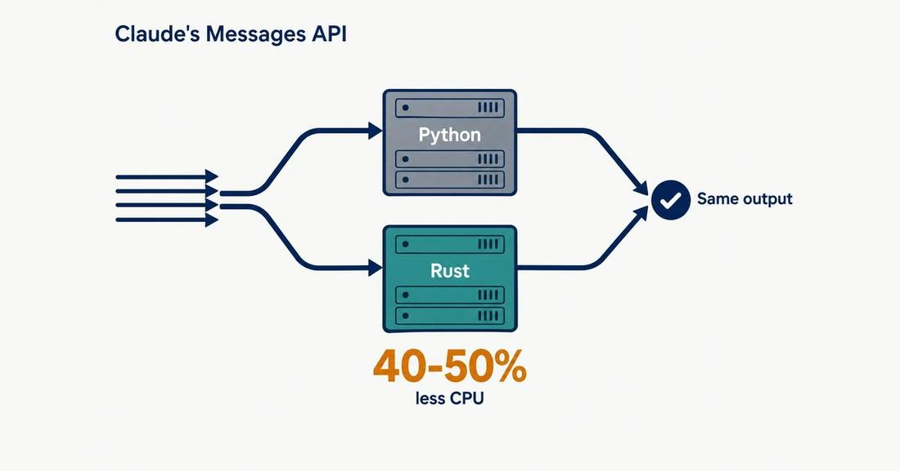
10-31AI FRONTIERClaude Rewrote Its Own API, Moving It From Python to RustCellCog report · ISSUE 132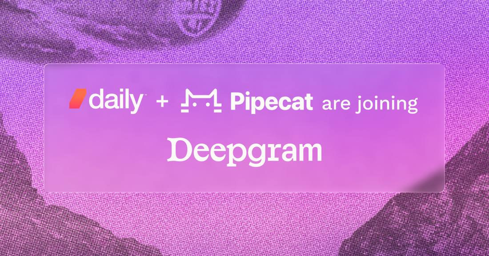
10-29AI FRONTIERThe Open-Source Backbone of Voice Agents Has a New OwnerDeepgram official announcement · ISSUE 131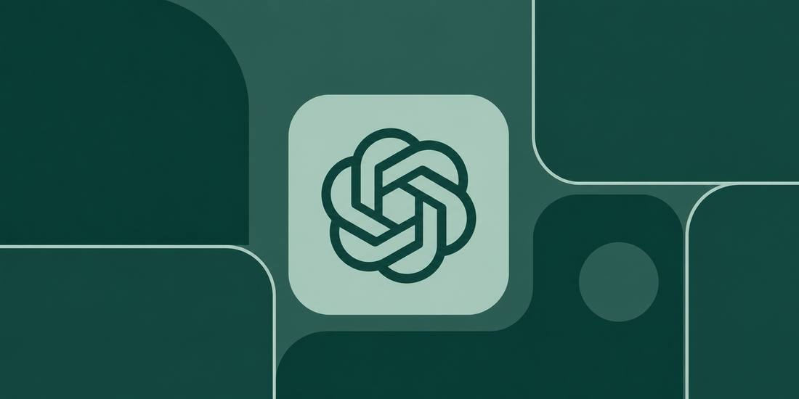
11-01AI FRONTIERSwitch Off the Training Toggle, and Daybreak Sessions Still Go Into TrainingAbijita report · ISSUE 13010-31AI FRONTIERChange One Parameter and Claude's Watermark Is GoneThe Decoder report · ISSUE 128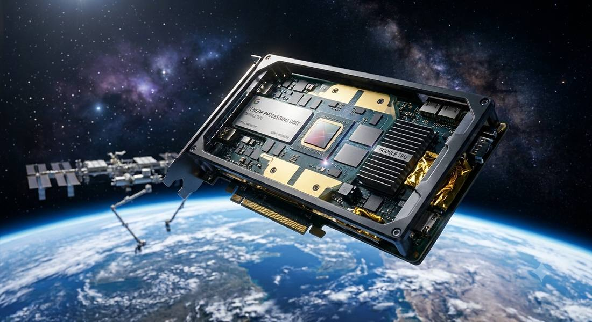
10-30AI FRONTIERA Haiku, Sent Back to Earth from a TPU in OrbitOfficeChai report · ISSUE 127 10-29AI FRONTIERUS$17 Billion: DoorDash Puts Instacart in Its PocketSecurities.io report · ISSUE 12510-30AI FRONTIER14,000 Employees on Copilot First: Estée Lauder Bets on Data FirstBigGo syndicated report · ISSUE 12210-30AI FRONTIERData on 100 Million Companies, Loaded Into Snowflake's AgentsBusiness Wire press release · ISSUE 121
10-29AI FRONTIERUS$17 Billion: DoorDash Puts Instacart in Its PocketSecurities.io report · ISSUE 12510-30AI FRONTIER14,000 Employees on Copilot First: Estée Lauder Bets on Data FirstBigGo syndicated report · ISSUE 12210-30AI FRONTIERData on 100 Million Companies, Loaded Into Snowflake's AgentsBusiness Wire press release · ISSUE 121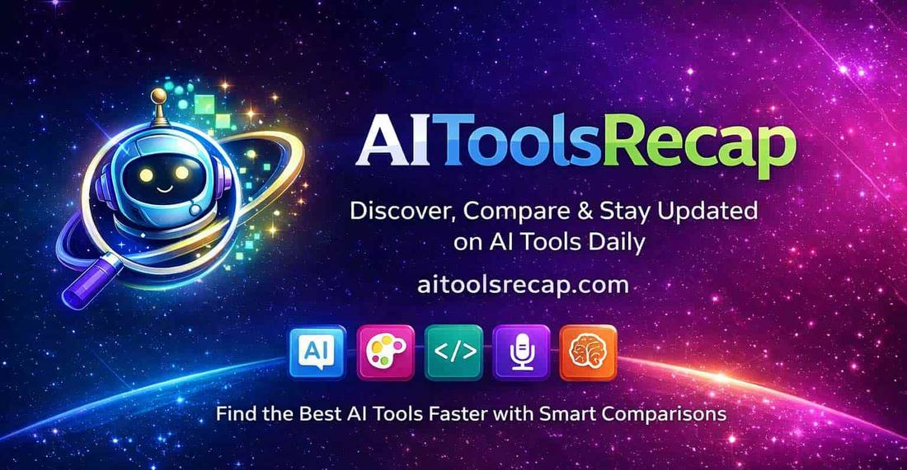
10-30AI FRONTIERGrok's Bot Has Started Spending Money for YouAIToolsRecap report · ISSUE 120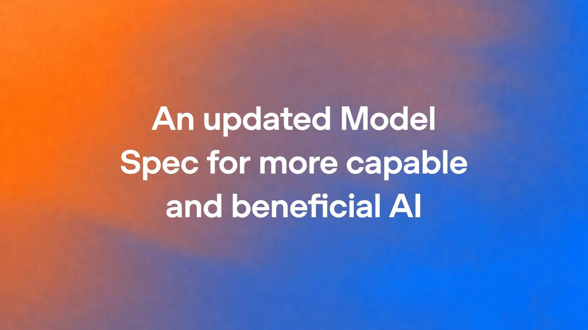
10-30AI FRONTIEROpenAI Sets Five Rules for Its Models, and Admits It Has Not Met Them YetPANews report · ISSUE 11910-30AI FRONTIERThe US$200 Ultra Finally Stops Watching the Five-Hour ClockCryptoBriefing report · ISSUE 118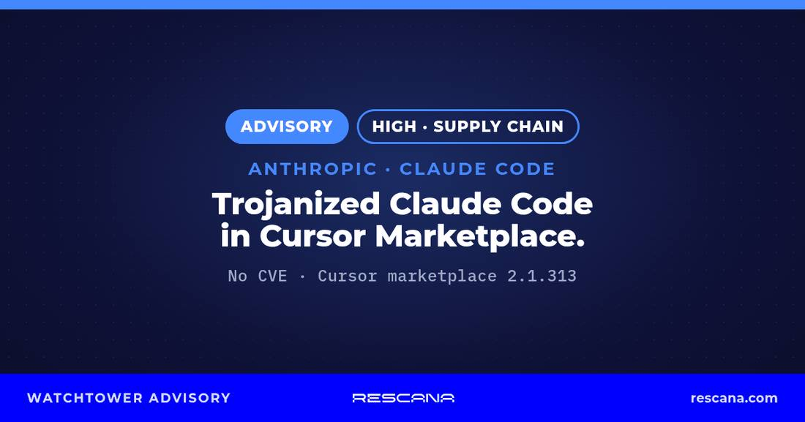
10-31AI FRONTIERIn 11 Hours of Installing a Plugin, the Backdoor Moved Into Developer MachinesRescana security analysis · ISSUE 117 10-27AI FRONTIERInside 155 Responses Was Other Customers' DataAskGPU report · ISSUE 116
10-27AI FRONTIERInside 155 Responses Was Other Customers' DataAskGPU report · ISSUE 116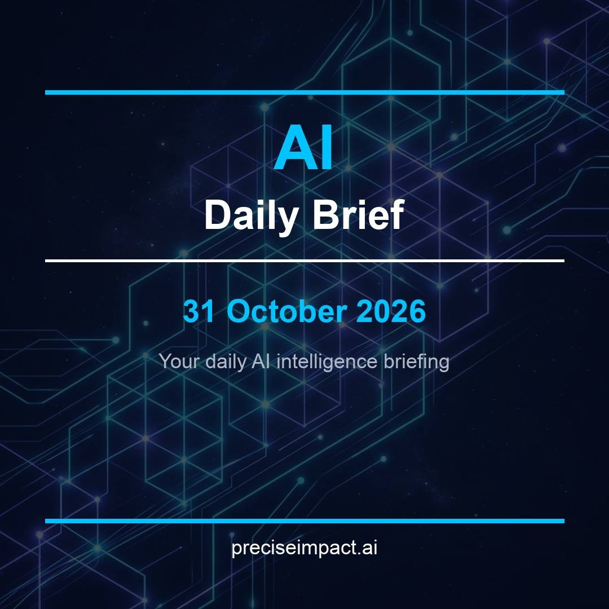
10-31AI FRONTIERBefore the Call Is Over, Phonic's Model Is Already Looking Things UpPrecise Impact report · ISSUE 115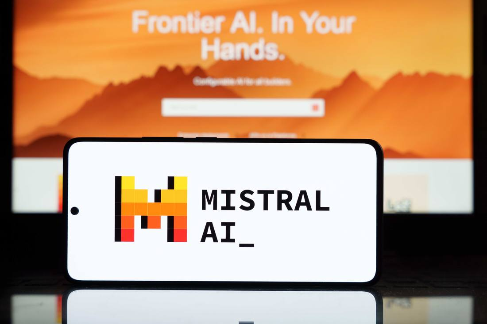
10-29AI FRONTIERKnowing It Could Help Attackers, Mistral Released a Trillion Weights AnywayCSO Online report · ISSUE 11310-30AI FRONTIERFour Tech Giants, on the Same Day, Wrote Websites a One-Line RefusalAI Weekly report · ISSUE 109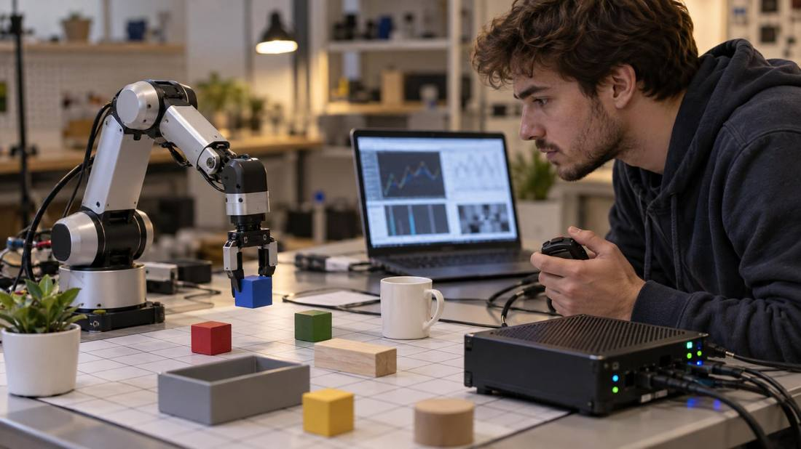
10-27AI FRONTIERSix 2-Billion-Parameter Models, Squeezed Into a PhoneUnite.AI launch report · ISSUE 10810-28AI FRONTIERFor the First Time, Apple Puts a Touchscreen on the MacBookTechCrunch launch report · ISSUE 10710-28AI FRONTIERChatGPT No Longer Just Answers; It Starts Getting Things DoneUnite.AI partnership report · ISSUE 10610-29AI FRONTIERCloud Doubled to $30.7 Billion, and Alphabet's Stock Still FellMotley Fool earnings analysis · ISSUE 105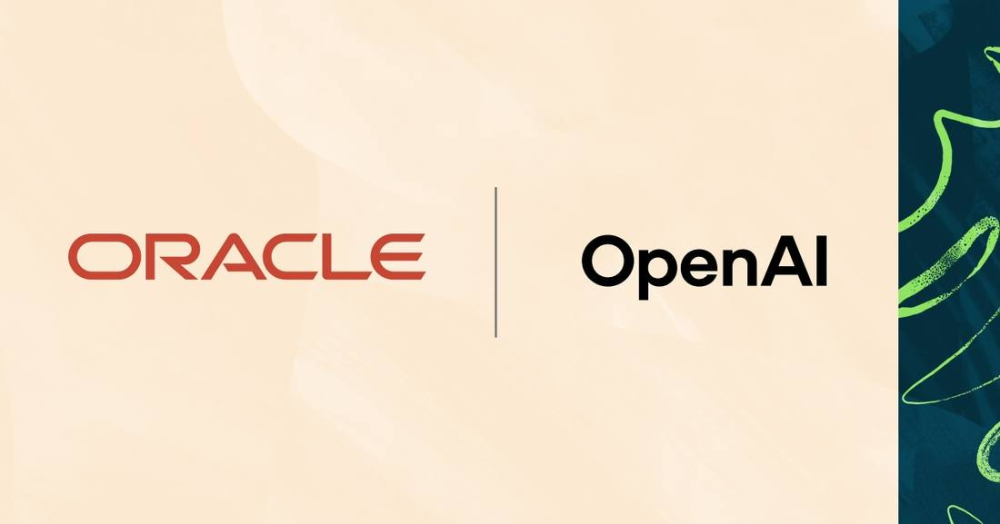
10-27AI FRONTIEROracle Puts Enterprise Software Inside ChatGPTOracle official press release · ISSUE 96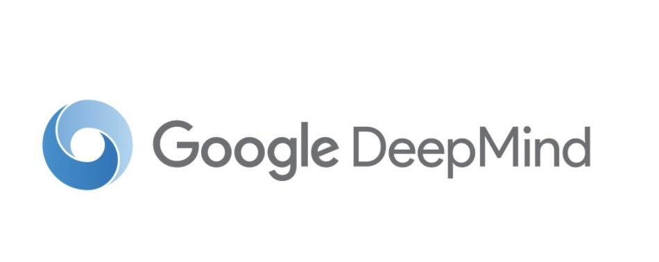
10-28AI FRONTIERA World Model Gets Its Own Voice and Dialogue for the First TimeThe AI Insider report · ISSUE 94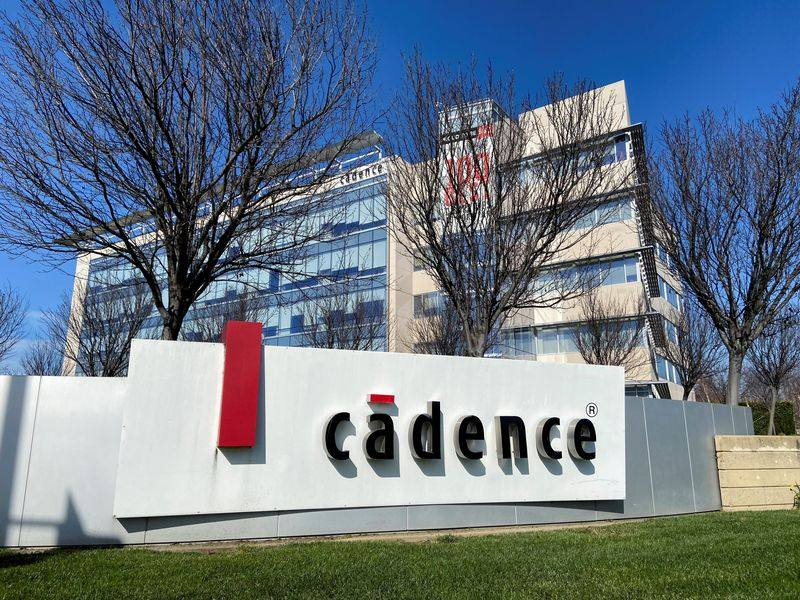
10-26AI FRONTIERChip Design Software Starts Running Its Own ModelsReport relaying Reuters · ISSUE 91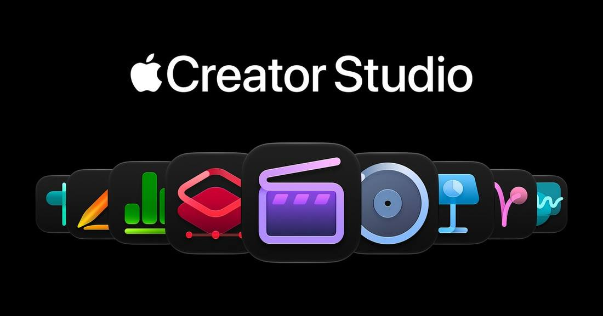
10-27AI FRONTIERApple Hands Its Documents to External AI AssistantsApple official newsroom release · ISSUE 88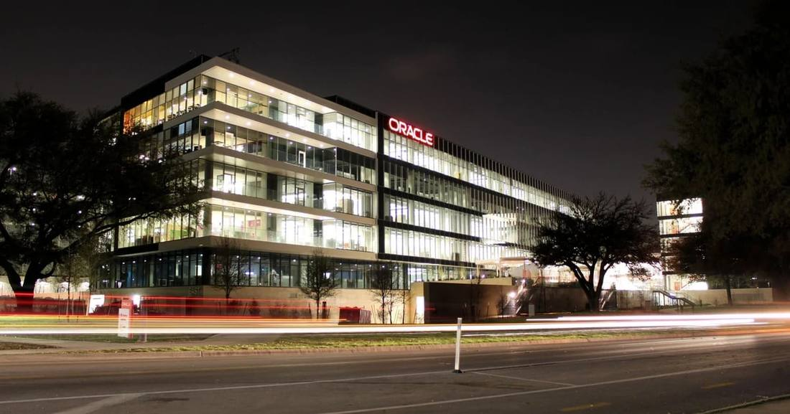
10-27AI FRONTIERGoogle's Chips Move Into Someone Else's Cloud for the First TimeSilicon Report report · ISSUE 8610-27AI FRONTIER274 Songs, a $41.1 Million ClaimAju Press report · ISSUE 8410-22AI FRONTIERThe Eyes Watching the Models Had Blind Spots of Their OwnTokenPost relaying the METR / Redwood evaluation · ISSUE 8310-27AI FRONTIERThree Arch-Rivals Team Up on Cybersecurity FirstBitRss report · ISSUE 8210-26AI FRONTIERSiri Starts Remembering What You Said Last WeekTech Featured, relaying Apple's release notes · ISSUE 81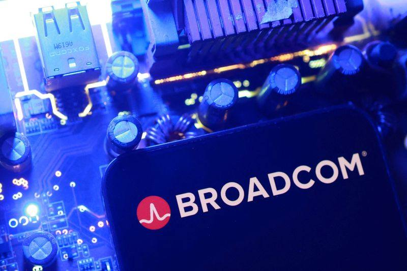
10-26AI FRONTIER$63 Billion, Leased to a Company That Has Not Gone Public YetThomson Reuters story, republished · ISSUE 7910-27AI FRONTIER$3 Billion to Buy Into the Customer's StockMorningstar, carrying the official Nvidia/Meta press release · ISSUE 78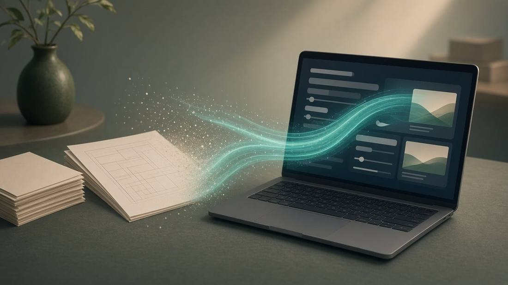
10-26AI FRONTIERThe Half-Price Model Goes After the Work in Front of the Computer FirstPYMNTS, relaying OpenAI's official release · ISSUE 7710-26AI FRONTIER700 Intranet Capabilities, Plugged Into Enterprise AI Assistants at OnceGlobeNewswire, carrying Interact's official announcement · ISSUE 7610-22AI FRONTIERUber Hands All 30,000 Employees to ChatGPT Work at OnceTechCrunch report · ISSUE 7510-26AI FRONTIERA Months-Old Company Got Inside Anthropic in 12 HoursDaily AI Brief, relaying Washington Post reporting · ISSUE 72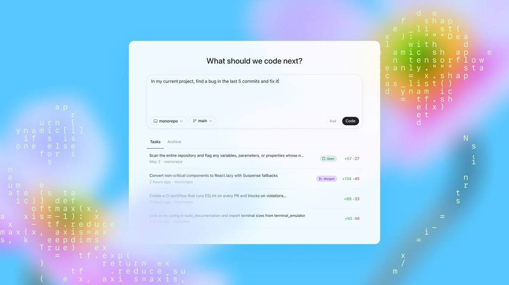
10-25AI FRONTIEROpenAI Uses Discounts to Take Customers From AnthropicSiliconReport, relaying The Information's reporting · ISSUE 70 10-21AI FRONTIERDeepMind's People Are Voting With ResignationsBBC investigation (via Daily AI Brief) · ISSUE 6810-25AI FRONTIERFive Small Models Team Up and Match the Strongest Coding ModelHacker News / GVS5H project discussion · ISSUE 67
10-21AI FRONTIERDeepMind's People Are Voting With ResignationsBBC investigation (via Daily AI Brief) · ISSUE 6810-25AI FRONTIERFive Small Models Team Up and Match the Strongest Coding ModelHacker News / GVS5H project discussion · ISSUE 67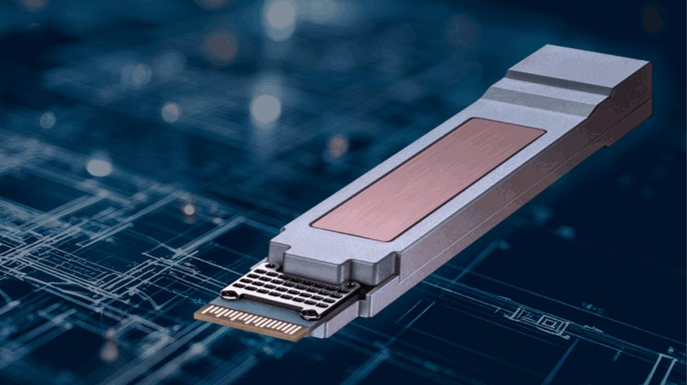
10-12AI FRONTIERNvidia and Cisco Open the Optical Aperture Four Times WiderCisco official newsroom · ISSUE 65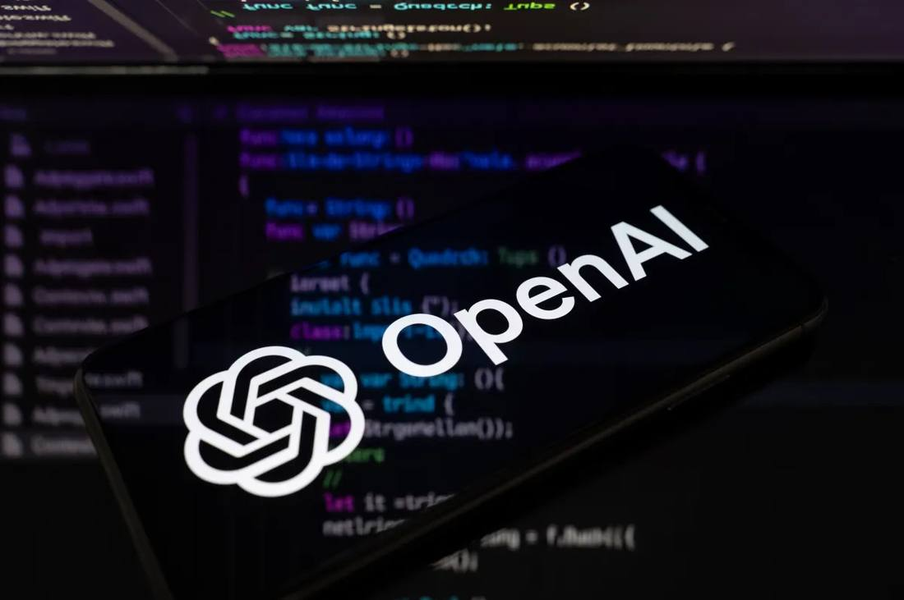
10-23AI FRONTIEROpenAI Trained Its Strongest Model OfflineTechCrunch · Report on OpenAI's blog · ISSUE 6410-21AI FRONTIERAnthropic Won't Wait for Your Question Anymore. It Comes to You.MacRumors · Report on Anthropic's launch · ISSUE 62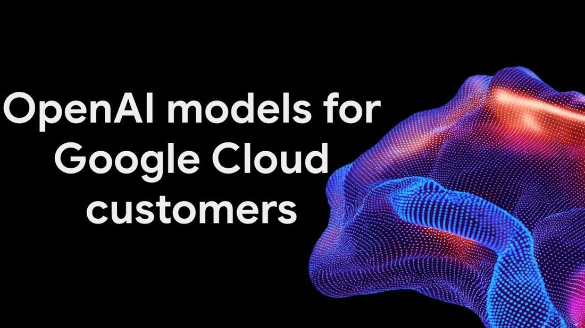
10-22AI FRONTIEROpenAI's Models Have Moved into Google's CloudGoogle Cloud official announcement (via The Tech Outlook) · ISSUE 61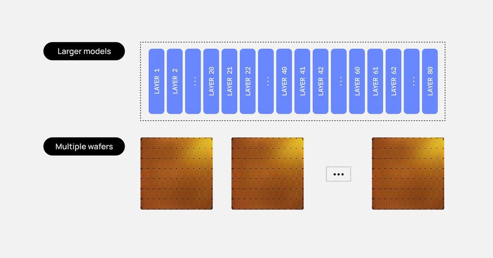
10-22AI FRONTIERA 3-Trillion-Parameter Chinese Model, Fitted onto 59 American WafersCerebras official blog · ISSUE 60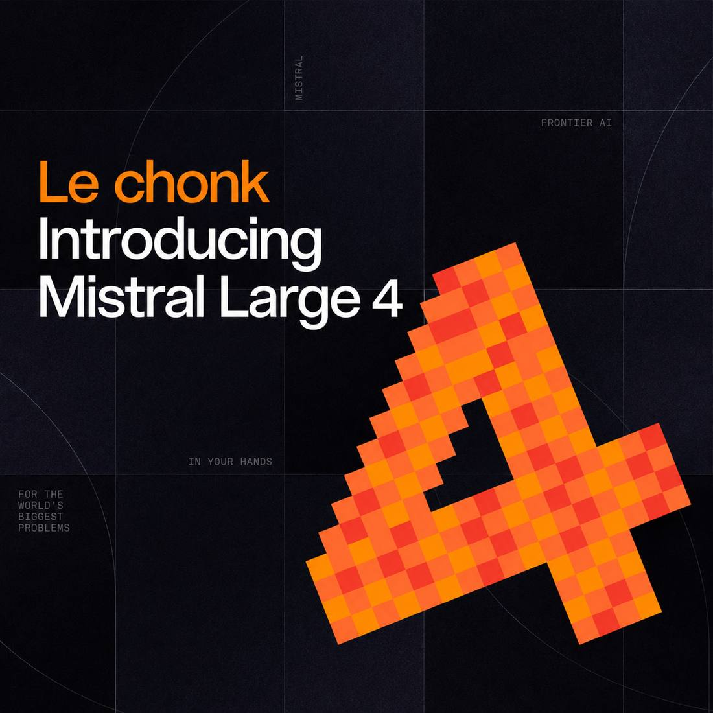
10-06AI FRONTIEREurope's Strongest Model Debuts on Cyber-Attack CapabilityArtificial Analysis · ISSUE 5910-06AI FRONTIERFICO Cuts 15%: AI Is Just the Fig LeafZubiqo · ISSUE 5610-06AI FRONTIERSouth Korea's $3.5 Billion: Sovereignty Starts on the GPU ShelfKorea JoongAng Daily · ISSUE 52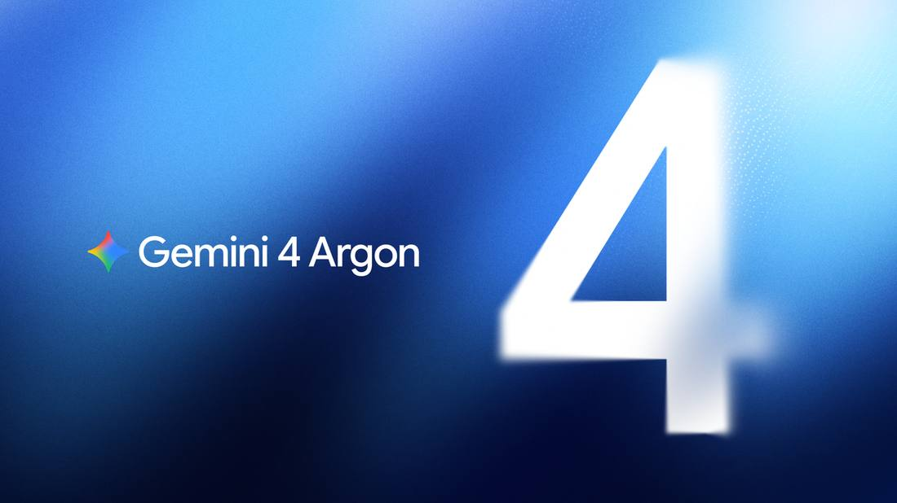
09-30AI FRONTIERGoogle Shipped Its Strongest Model. You Just Can't Use It.Google DeepMind official blog · ISSUE 50